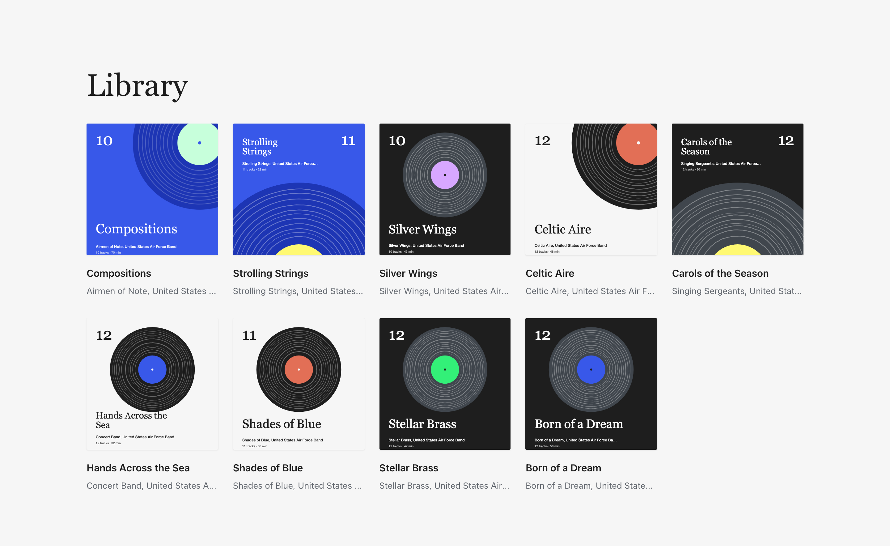

Own your music again
Riff turns a WordPress post into a record: your songs, your cover, your words, on a page you own. It plays like the apps you already use, with no accounts, no ads, and no one in between.
Nine albums on a WordPress site, in a new tab. Nothing to install.

Keeps playing while you read
Put a record on and keep reading. Scroll, open another post, lock your phone; the music carries on.

- Swipe the barLeft or right for the next or previous track. Down to stop.
- Lock screen controlsTitle, artwork and the play controls on the phone's lock screen, and on the media keys.
- Keeps playing between pagesFollow a link to another page on the site and the music carries on. Reload, and it is paused where it was.
- The filamentThe amber line in the bar is a level meter. It brightens with the music and fades when you pause.
- AirPlay and ChromecastA cast button appears in Now Playing, and in the bar on a phone, when the browser finds a speaker or TV on the network.
- Keyboard shortcutsSpace or K plays and pauses, J and L skip ten seconds, Shift+N and Shift+P change track.
The whole post, up next
Every track in the post lines up behind the one you chose, the way an album plays through. Pull the handle to see what's coming.

Song or video, same track
When a song has a video, a live take say, a switch at the top of Now Playing flips between the record and the room without losing your place.

One page where everything plays
Add the Riff block to a page and it becomes your shelf. Open any album, play from its cover, and the music carries on while you browse.

Try it in your browser
Nine albums on a WordPress site, running in WordPress Playground. Nothing to install.
Opens in a new tab. Recordings by the United States Air Force Band. Public domain.


The nine albums on the demo's shelf. Eight of the covers are drawn by Riff, a record with one groove per track, for albums that bring no artwork of their own.
Get Riff
Riff plays the audio, video and playlist blocks WordPress already has. Your files stay in your Media Library, on your host, under your name. One new page, if you want it. And it is built to be extended, with every hook and the JavaScript API documented.
Version {{version}}, as a zip for the Plugins screen. Upload it under Plugins, Add New Plugin, and activate.
What it needs
- WordPress 7.0 or newer
- PHP 8.1 or newer
- Any theme; the Listen page template needs a block theme
- Nothing to configure
What it adds
- One script, one stylesheet, no build step
- Artwork and Video version fields on media
- The Riff block, or
[riff]
Open
- Source on GitHub
- How it works, in the readme
- GPLv2 or later, like WordPress
- Release notes
- Report a problem
For developers
riff_trackon every media item in RESTriff/v1/library, with schemas- WPGraphQL fields, when it is installed
- Every filter and action, with its parameters and where it fires
- The JavaScript API: events, actions and filters on the player
- Your own source of tracks, through the documented interface